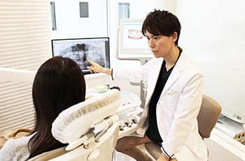

- 新宿の歯医者・矯正歯科「新宿ルーブル歯科・矯正歯科」TOP
- 初めて来院される方へ
当院がお力になれる方
- 対症療法ではなく、原因を根本から改善する治療をご希望の方
- 痛みや自覚症状などがない場合を含め、全体的に早期発見・早期治療をご希望の方
- 保険診療・自費診療それぞれのメリット・デメリットの丁寧な説明をご希望の方
- 治療後も、治療部位を含めたお口全体が悪くならないように、定期的な予防処置をご希望の方
診療の流れ
「虫歯や歯周病はどんな治療を行うの？」「矯正治療はどうやって進めるの？」など、治療の疑問やご不安を感じている方のために、新宿の歯医者「新宿ルーブル歯科・矯正歯科」の初診の流れをご紹介します。初回ご相談は無料、新宿駅東口直結・徒歩1分なので、お気軽にお問い合わせください。
-
STEP
01治療のご予約はこちらから
スムーズな治療のため、ご来院の前には下記のお電話または「ご予約・ご相談ボタン」からご予約をお願いします。
-
STEP
02ご来院に際して必要な物と問診票の記入
ご来院の際は保険証・医療証（お持ちの方）のご提示をお願いします。現在、飲まれているお薬がある場合はお薬手帳のご持参もお願いします。また、受付後に問診票をご記入いただきますのでご予約の10分前にはご来院ください。
-
STEP
03問診・ヒアリング
受付をお済ませいただき準備が整い次第、半個室の診療室へご案内します。患者さまが現在気になっている症状やお口周りでのお悩みなどを詳しくお聞かせください。治療に関する不安や疑問も分かりやすくお答えします。どのようなことでもお気軽にご相談ください。
-
STEP
04検査・診断
患者さまのお口の状態を確認するため検査を行います。レントゲン撮影、口腔内写真撮影、歯周病検査、咬合検査など必要に応じてさまざまな検査・診断をします。妊娠中または妊娠の可能性がある場合は、歯科医師またはスタッフへ事前にお伝えください。

-
STEP
05痛みを和らげる応急処置
「虫歯で痛みがある」「冷たい食べ物・飲み物がしみる」といった場合、まずは応急処置を行います。症状を和らげ、患者さまの負担を減らした上で治療をスムーズに進めるためです。痛みの発生を抑えるためにも、治療計画に沿って継続的なご来院をお願いします。
-
STEP
06検査結果のご説明とカウンセリング
撮影した画像などを交えながら検査結果をご説明し、治療計画をお伝えします。疑問や不安なことがありましたらお気軽にご質問ください。当院では患者さまのお気持ちに寄り添い、ご納得いただいてから治療を行います。
-
STEP
07治療開始（治療内容によっては次回）
患者さまにご同意いただいた治療計画に沿って治療を進めていきます。治療の回数や内容は患者さまごとに異なり、場合によっては次回のご来院から治療を開始することもあります。疑問や不安なことがございましたらお気軽にお声がけください。
-
STEP
08治療終了後メインテナンスの実施
事前にお伝えした計画に沿った治療がすべて終了したらメインテナンスをご案内します。虫歯や歯周病などは再発リスクも高く、しっかりとメインテナンスを行わないと口腔内トラブルにつながりかねません。いつまでも健康な歯を保つためにも、定期検診をご活用ください。

ご来院いただく際の注意点とお願い
- 事前にご予約いただければ、お待たせすることなくスムーズにご案内できます。
- ご予約の変更またはキャンセルがある場合は、前日までにご連絡ください。
- ご予約の時間に遅れてしまう場合は、必ずご連絡ください。
- 初診の方は問診票の記載がございます。ご予約時間の10分前までにご来院ください。
- お口全体の健康を考慮し、当院では保険診療と自費診療の両方のご説明をしております。
※ご予約なしでも診療可能です。ただし、ご予約の患者さまが優先となりますので、場合によっては長時間お待たせしてしまう可能性があります。
専門医が患者さまに最適なご提案をします
当院では、歯のプロフェッショナルとして患者さまに最適な治療をご提案します。
患者さまの症状によっては保険診療だけでなく、自費診療の治療や詰め物・被せ物、歯の噛み合わせを改善する矯正治療などのご提案をする場合もあります。
もちろん、お話しをじっくりと伺った上で最終的には患者さまにご判断いただきます。
ただし、当院では患者さまに歯を長く健康にお使いいただきたいと考えているため、必要な治療をご提案させていただきます。